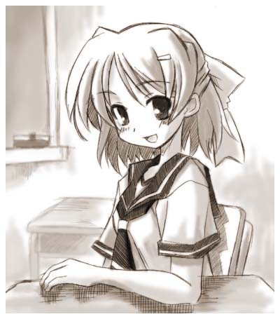
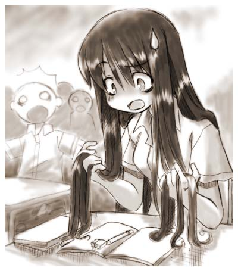
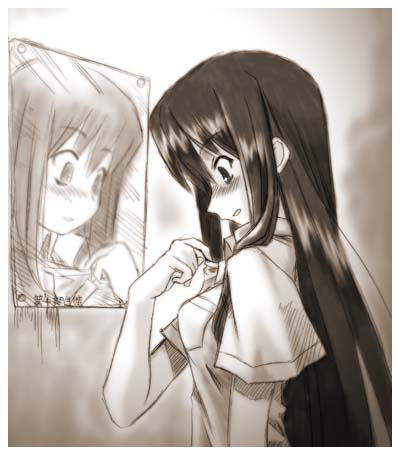
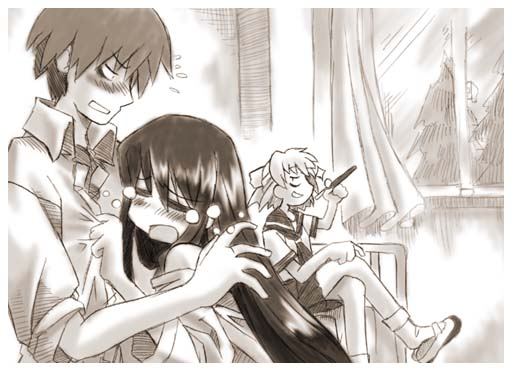
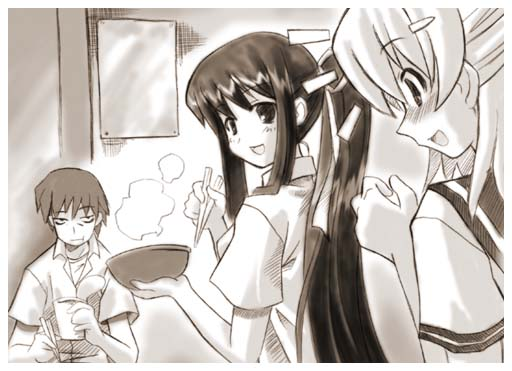
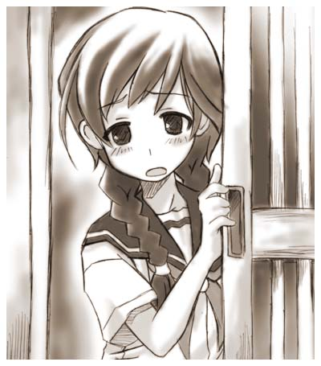
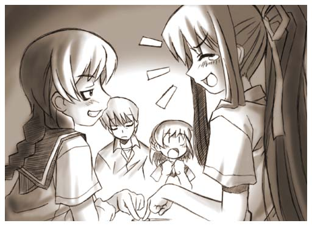
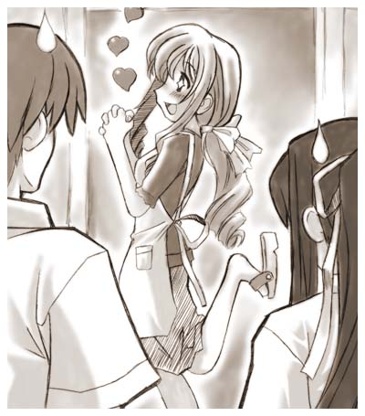

俺は佐倉 伊織（さくら いおり）、高校１年の男子。
正直外見的にはあまり特徴はない、身長体重共に平均値、 顔も悪くないが良くもないどこにでもいそうなタイプだ。一応勉強はしてるから平均よりもいい点数を取れている、とはいえ目立つほどじゃない。運動は苦手ではないが凄く出来るわけでもない、部活にも入ってないしな。
これだけ普通要素が揃っていればクラスでも地味な位置に居そうだが、仲の良い幼馴染２人がかなりの変人なので 結構に目立つポジションにいると言える。
それであの事件が起こったのは学校にも慣れ始めた初夏、衣替えをしたばかりの６月。
梅雨の気配なんかまったく感じさせない気持ちのいい晴天の朝だった。いつも通り通学途中にある『安曇神社』を突っ切り近道をした時いつもと違う違和感に気づく。
社の方に目を向けると、記憶にある古い建物とは違い柱以外ほとんど焼けてしまって消し炭の山になってしまっている。
そういえば昨夜近所で火事があったみたいだけど、この神社だったのか・・・。
この神社は小さいころから友人と一緒に遊んだり祭りやその他の行事などにも参加したりして色々と思い出もあったから少しは寂しくも感じたんだけど、学校に遅刻してまで感慨ふけるほどではなくすぐに道にもどった。
もちろんこの時は何も気付いてないし、まさかあんな事がこの身に降りかかるなんて思ってもみなかった。そりゃそうだろ、この程度のことその辺にいくらでもありそうな事だしこの火事からその後の事件を予測できるとしたらそいつは預言者か少女少年文庫の常連くらいなもんだろう？
でもどーやらこれが事件の始まりだったみたいだ。
ぎりぎり遅刻せずに学校に着いた俺はあくびをしながら教室に入りクラスメートと適当に挨拶を交わし席につく。
自分の席に座り鞄から教科書やノートを机に移し変えていると前の席の女子が話し掛けてきた。
「はよー、伊織。」

「ひえええええええー！」
俺は情けない声をあげつつ飛び起きる。
朦朧とした頭で自体が把握出来ずに辺りを見回した。 クラス中の視線が俺に集まっている。
やべっ授業中だった、うわー恥ずかしい・・・。
・・・・・・・・・・・・。
静まり返る教室・・・。
そろそろ爆笑の渦が巻き起こり、俺が汗をかきながら先生に平謝り 先生は容赦なく俺に追加の課題をあたえるという３連コンボが発動する筈———。
「え、えーと・・・？」
発動はしなかった。
・・・・・・・・・・・・。
なんか回りの反応が妙だ、まあ、あんな叫び声を上げながら飛び起きたんだから変な目で見られるのも仕方ない・・・仕方ないと思うが・・・それとは違う何かがみんなの視線にはあった。
「さ、佐倉か？」
古文の茂山が恐る恐るそんなことを聞いてくる。
「は？ いやまあそうですが・・・」
おいおい昨日もあんたの授業で爆睡してたのを叩き起こしたんだからそのくらい覚えていてくれよ。
「お前、その髪どうしたんだ？」
「は？髪？」
そういえばなんか長い髪のようなものが頭から伸びているが・・・これは俺の髪？
「うわ！うわわわわ！何！？これ、俺の髪？ええ！？」

保健室に保険医の先生はいなかった。
突っ立っていてもしかたないので取りあえずベッドに座り一息つく。
「おーい、大丈夫かー？」
裕香が俺に声をかける。
あまり心配している様子はないが、逆にそれが今はありがたく感じた。
「あ、ああ。大丈夫、取りあえず俺は正気だと思う」
「あらら、こんな事言ってる、かなりきてるねこりゃ」
「あたりまえだ、突然自分の性別が変わって平然としている奴なんているかよ」
「こんな美少女になったんだからいいじゃん、胸なんてあたしより大きいし」
なぜか嬉しそうだな裕香。くそー人事だと思いやがって。
「あのなー、男の俺の胸が大きくてもうれしくないぞ」
「今は女なんでしょ」
「うっ、でも魂は漢なんだよっ！」
「相変わらずのバカね。で、どこか痛い所はないの？」
「・・・それはない、というか前よりも調子が良いみたいだ」
そうなのだ、落ち着いてみると力がみなぎっている感じがするし感覚が研ぎ澄まされていて１００Ｍ先の針が落ちる音も聞き分けられそうだ。
「ふーん」
裕香が俺の顔をまじまじと覗き込む。
「な・・・なんだよ・・・」
「なんか女になった伊織、いいかも」
「は？」
「まず服かな・・・いや、その前に髪かな・・・それとも・・・」
裕香の目つきがなにやら妖しい感じに光り始めた・・・。
「裕香？」
俺が危険を感じておずおずと裕香に呼びかけてみる。
「少し黙ってて・・・」
そういって裕香が俺の顎に手を添え、顔を自分の方へ向かせる。
うわ、そんなに顔をよせるな。
「裕香ちょっといいか？」
誠二も裕香の変貌に気付いた様だ、俺を救出にかかる。
「なーに？」
俺の顔を左右に動かしながら、半分上の空で返事をする裕香。
「買出しを頼みたいんだが」
「えー、何であたし？」
「俺では無理だ。買ってきて欲しいものは女物の下着だ」
ガンッ！ 余りに唐突な誠二のボケによろめいた俺の頭が壁に打ち付けられた。
「今の伊織を見るとこの問題は切実だと思う」
あわてて言い訳をする誠二。
俺をじっと見る裕香、特に胸のあたりを注目している。
「そんな目でみるな！」
「ふーん、そうね、確かに必要かな」
「何がだよ！なんで女物の下着をつける必要があるんだ？」
体が女性になったからって服は関係ないんじゃないのか？
そう思いつつ自分の体を見下ろしてみる・・・。
「・・・・・・」
あーあれか・・・。透けるのか？ワイシャツと白いタンクトップだと。
あれが・・・さくらんぼがね・・・うわー、・・・ちょっとやらしいかも。
「取りあえずの物だから駅前の１００円ショップで買えるものでいいだろう」
そんなところで買える物なのか？いやむしろそんな知識どこで知ったんだ親友よ・・・。
「ん、わかった。しょーがない、ちょっと行ってくるか」
案外あっさり同意する裕香。普段は絶対に買出しなんか行かない奴なんだが、どういう風の吹き回しだ？
何か企んでいるのだろうか・・・。
「ついでに何か食べるものも買ってくるよ。その間いおりんの事よろしくね」
「誰が、いおりんだ！」
「わかった」
「そいじゃー行ってきまーす」
そう言って裕香ぱたぱた走って出て行った。
しかし、あいつ妙にうれしそうだな・・・。
「伊織、お茶でものむか？落ち着くぞ」
裕香が保健室から出て行くのを見送った後誠二が声をかけてきた。
「ああ、もらうよ」
「少しまってろ」
そう言って隣の給湯室へお湯を沸かしにいく。
一人残され暇になった俺はしばらく呆けていたが、あることに気が付いた。
そういえばまだ俺、自分の体がどんな感じになったのか見てないな・・・。
裕香は気に入ったようだが、あいつの好みはどうも信じられん。
ちと怖いが一応見ておくか・・・。
保健室の壁にかけてある大き目の鏡をのぞき込んでみる。
「うわー、これは・・・」
そこには可愛いと言うよりも綺麗といった感じの少女が写っていた、肌の色は雪のように白く、すっと筋のとおった鼻、細めの眉、そして緑色の光沢放つ黒い髪、大人っぽい顔にわずかな幼さを残した神秘的な顔だった。
目元だけ少し俺の面影があったが、ほとんどの人間は同一人物だとは解らないくらい別人になっていた。

程なくして裕香がコンビニの袋を２つぶらさげて帰って来た。
「ただいまー、買ってきたよーいおりんの下着！」
「いちいち下着を強調しなくていい！」
「で、これが食料ね、頼まれた物ついでだから他にも必要そうな物も買っておいたよ」
裕香は袋を教卓の上に２つの袋を無造作に置いた。
「悪いな、助かるよ」
ここは素直に感謝しておく事にする。
「お代は後でまとめて請求するからね」
「む、まあしかたない」
「ほいじゃ時間もないことだし、さっさと着けちゃいましょ」
「え？ 今？」
「当然でしょ、もうすぐ昼休みだし早いほうがいいでしょ。誠二、外で誰も入ってこないように見張ってて」
「わかった」
誠二は簡潔に返答した後、俺に哀れみの目を向けてから保健室から出て行った。
「さ、つけてあげるから服ぬいで」
「い・・・いや、自分でつけるからいいよ」
「だめよ！ ちゃんと付けないと。変な付け方すると形が崩れるから」
「どうせスポーツブラだろ、自分で出来るって」
「それじゃ私があんたの体を調べられないでしょーが！」
「それが本音かよ！」
「うー、いいわ！こうなったら力ずくでいくからっ！」
そう言うが早いか裕香が俺をベッドに押し倒した。
と同時にすばやく動く裕香の両腕、正に流れるような動きで俺の腕をベッドの手すりに縛りつけた。
「なっ！？お前なにすんだよ！」
しまった、忘れていた裕香の特技を・・・。
「うふふふふ・・・、これで逃げられないね。大丈夫下着を着せるだけだから・・・」
ニヤリと妖しく裕香が笑う。
実はこの娘、人を縛る事に関しては神業レベルの腕をもっている。
そのスピードは電光石火、不意打ちでやられたら抜け出す事はほぼ不可能だ。
「うわっ、おまえっ！ほどけよっ！、やめろ！」
俺は涙目で裕香にむかって抗議する。
実は昔、こんな風に縛られて性的悪戯をされた事が度々あった、その時のトラウマの数々が俺の脳裏をよぎる。
”はーい、伊織ちゃん診察しましゅよ〜”
”はーい、伊織ちゃん剥き剥きしましょーね〜”
”伊織ちゃ〜ん、お毛ケは生えましたかー？”
”何がでるかな、何がでるかな〜？しゅっしゅっぽっぽー♪”
・・・・・・いかん、死にたくなってきた。過去のトラウマを思い出すのはよそう。
「冗談やめろって！ もう縛らないって約束しただろう」
もちろん事があった後きちんと裕香には仕返しをした。
性的な仕返しはさすがに勘弁してやったが、裕香が泣くまで許してやんなかった。
「ごめんなさい、いおりん・・・でもこれはあなたの為なのよ！ わかって・・・」
とか寒い芝居をしつつ、俺のＹシャツのボタンを外しにかかる。
「うわっ、やめろって、うわ・・・あ、ああん。って胸を揉むな！！」
「わー、なかなか良い乳してるわね・・・」
「くっ！ このっ！」
ぎりぎりと力ずくで縄をはずそうとしてみる。
正直無理だという事は百も承知でだ、今までの経験からこいつが柔な縄を使う事はないとわかってるからな。
「だめだめ、そんな事したら跡になっちゃうよ」
「じゃあ、ほどけよ！」
「だーめ。さあ、脱ぎ脱ぎしましょうねー」
「うわー、くるなー！」
「大丈夫、天井の染みを数えているうちに終わるからね」
裕香は宝塚の男役の様な口調でこんな事をいいやがった。
「ひぃぃぃぃぃぃ！、いやあああ！、やめてー！」
この時、俺の悲鳴は廊下まで木霊したと言う。
ここで問題、裕香は俺を縛ったままでどうやって俺を着替えさせたのかな？
正解は————。
縛っている間は下着を着けなかっただけ、散々俺をオモチャにして ぐったりした所を縄を解き下着を着けたという訳だ。
ちきしょー裕香め後で覚えてやがれー。
「入っていいわよー」
昼休みのチャイムと裕香が誠二を呼ぶのはほぼ同じくらいだった。
誠二が担任の幹島先生を伴って入ってきて室内の様子を見てそのまま固まる。
誠二はこの時の状況を後にこう語った。
「ああ、あの時の保健室の状況は凄惨としかいえない。ベッドに脚を組んで腰掛けながらポッキーを口に咥えている裕香とその奥に丸くなってずり落ちたYシャツを体にきつく抱きながらすんすん泣いている髪の長い黒髪の少女という図だ。何も知らない人間が見たら必ず誤解されていただろう、いや誤解ではないかもしれないが・・・。
しかし、あの時の伊織は儚げで、俺に泣きついてきた時には思わず肩を抱いて慰めてしまうくらいだったな・・・」


そのまま急く気持ちを押さえつつ俺達は安曇神社を目指した。 俺が通学に使っている道はいつも人が少ないので知り合いになど会わないですんだ。もっとも今の俺を見て「佐倉 伊織」だと判る人は居ないだろうが。
安曇神社はまったく人気がなく、 たまに吹く風に木の葉が揺らされてさらさらという音が聞こえるだけだった。
社のあった場所は朝と同じで炭山のまま放置してあった。
日が傾いてきたせいだろうか、朝見たときよりも寂しい感じがする。
「うーん。何かないかなー」
ざくざくと黒山に入っていく裕香。
良いのか？ 朝は祟りがどうこう言ってたのに。
「ほらっボケッとしてないで。あんた達も探す！」
「はいよー」
気のない返事を返してから３人で炭の山をほじくりかえしはじめる。その辺に落ちていた木の棒を使った。
しかし３０分ほど作業をした結果、何もないという確信に至った。
まあそうだよなー。 この炭の中から何か出てくるようには見えないしな。
「やっぱり、何も出てこないわね。ま、いいや次行こ」
「次って？」
「管理している人の家だよ、すぐそこにあるでしょ」
「ああー、なるほどね」
「えーと。巳嶋さん家ね」
裕香が手帳を捲りながら言う。そんな事いつの間に調べたんだか・・・。
「今朝よ、探検に下調べは必須だからね」
「ああ、そうかそういえば今朝そんな事いってたな。女になった事ばっかりに気持ちが行っててすっかり忘れてた」
「ま、伊織は昔から一度に２つの事を考えるのは出来なかったしね」
「なにをー！」
「そんな事より早く行こ」
その家は神社の敷地内の隅にブロック壁で囲った場所に建っていた。以外に新しくて大きい。
神社って儲かるのか？ などという無粋な考えが浮かぶ。
ふと横を見ると裕香が凄い勢いでチャイムを連打していた。そのスピードはまさに名人もビックリな連射速度だった。
「お、おい」
「何？」
「お前は初対面の家にはそうやってチャイムを押すのか？」
「うん、こうすると早く出てきてくれるよ」
真顔で答えるよう裕香。非常識にも程がある。
なんで俺はこんな社会不適応者と友人関係を続けているんだろうか・・・腐れ縁というやつか？ だとしたらそれは世間で言われている以上に強固で厄介な代物なのかもしれない。
そんな事を考えて居ると中から泣きそうな少女の声がした。
「そんなに鳴らさないで〜。今出ますから〜」
そして玄関の扉がガラガラと音を立てて開けられた。
そこには地元の中学の制服を着たおとなしそうな少女が恐る恐ると戸の隙間からこちらを覗いていた。校則通りの２本のお下げが良く似合っている。
真面目な娘なんだろうな。

俺たちは「立ち話もなんですから」と少女に招かれて客間でお茶をご馳走になっていた。
互いに自己紹介をした後、 俺たちは事の顛末をおおまかに説明した。
「はあ、 そんなことが・・・」
”巳嶋 小夜（みしま さよ）”と名乗った少女はこちらの話を一通り聞いた後、あまり驚いた様子もなくこう言った。
「信じられないかも知れないけど本当なんだ・・・」
「はあ」
「巳嶋さん、先ほど伊織の事をあずさ様と呼んでいたがそれは誰の事かな？」
今まで静かにやり取りを聞いていた誠二が小夜ちゃんに質問する。誠二の顔に少し気圧された小夜ちゃんだが、けなげにも持ち直し返事をする。
「え、えーとですね・・・」
小夜ちゃんは上目遣いで俺を見ながら何か躊躇している。
「何か言いにくい事か？」
やがて小夜ちゃんは決心した様子で「ふう」と軽く溜め息をついてからゆっくりと話し始めた。
「私こういう事はあんまり人には話さないようにしているんですけど————。
見えるんです・・・えと・・・人には見えない物とか・・・」
「ええ！？ 小夜ちゃん幽霊とか見えたりするの！？」
裕香が身を乗り出して劇的に反応した。こいつはオカルトとかそっち系が好きだからなあ。
「は、はい。一応」
「じゃあうちの隊員にならない？ 今なら洗剤も付けちゃう」
裕香が小夜ちゃんを強引に勧誘しはじめた。
まずい。このままでは一向に話が進まなくなる。
「待てい、勧誘する前に大人しく話を聞けって」
裕香の襟首を持ち上げて元の場所に戻す。
裕香は以外にも抵抗せずに「うー」とか言いつつも大人しく引き下がった。
「どうぞ、続きを」
俺が裕香を押さえている間に誠二が先を促す。
「えと、それでうちの神社の神様とも顔見知りで、小さい頃から良く話したりしてたんです・・・」
「もしかして・・・」
やばい、なんか嫌な予感がしてきた。
「はい。佐倉さんの姿はその神様のあずさ様と良く似ていらっしゃいます、それに背後には後光まで見えますし・・・」
「まさか、伊織に神様が依り憑いていると？」
誠二が少し驚いた様子で聞く。誠二の顔は驚きと好奇心に満ちた顔だが俺たち以外の人間から見れば怒りを堪えている様にしか見えない。
「は、はい。間違いないと思います。今朝の火事があった時に祭ってあった御神体まで焼けてしまって。
それで、その後まったくあずさ様の気配が感じられなくなって心配して探していた所だったんです」
少しびくつきながらも小夜ちゃんは気丈にも返答した。
以外に真の強い娘なのかな・・・。
「つまり居場所のなくなった神様が伊織を依代にしてしまったということだろうか？」
「たぶん・・・。えと確か人の場合は依巫（よりまし）って言うそうです。最近はやらなくなったんですが昔はこの神社でも”神おろし”の行事はあったんです、ですからこういう事もあるのかなって・・・」
「神おろしってあの巫女さんに神様が乗り移ってご神託を告げるって言うあれ？」
裕香が話しに乗ってきた。「依代」とか「神おろし」などの言葉に反応したんだろう。
「はい、良くご存知ですね」
小夜ちゃんは嬉しそうに肯定する。
そういえば、 この話になってから小夜ちゃんの口調はずいぶんと滑らかになってる。
以外に裕香と気が合う方かもしれないな。
「しかし、何故伊織に憑く？ 依代にするなら巳嶋さんの方が良いのではないか？ わざわざ伊織を女にまでして憑く必要があったんだろうか・・・」
そういえばそうだ。
小夜ちゃんは霊感があるみたいだし、以前はおしゃべりをするくらいの仲みたいだし。 どう考えてもそっちの方が自然だろう。
「それは私にも判りません・・・。もしかしたら————」
「もしかしたら？」
裕香が聞き返す。
「あずさ様は佐倉さんが好きなのかもしれませんね」
「ブフ———ッ！ ごほっごほっ」
突然何を言い出すんだこの子は！ 少し前までまじめな話をしてたからギャップの激しさに思わずお茶を吹き出してしまったじゃないか。
「あ、すいません」
とあやまりつつ小夜ちゃんはティッシュ箱を俺に渡してくれた。気の利く子だ。
「でも、あずさ様って結構そういう所があったので・・・」
「そうなの？」
「はい。イタズラとか大好きで・・・私も色々な目に会いましたから」
何かを思い出して苦笑いする小夜ちゃん。
「へえー、神様ってイタズラとかするんだ？ ちょっとショックかも」
裕香が驚いていた。神様と聞いて荘厳なイメージを持っていたのだろう、俺だって少なからずそうだ。
ここの神様がそんなお茶目さんだったなんて・・・十年以上近所に住んでいたがまったく気が付かなかった。
「よそ様はどうか判りませんが、うちのあずさ様はそうですね。
おばあちゃんの話などでもそういった話をいくつも聞きましたし。地元では結構有名みたいです」
「えと、という事は俺はそのあずさ様のイタズラで女にされたのかな？」
だとしたらすぐに戻して欲しい、イタズラにしてはやり過ぎだと思うぞ。
「どうでしょう。こればかりは本人に聞いてみないと判りませんが、 ただ・・・」
「ただ？」
「あずさ様は本当に人が嫌がるイタズラはしないんです、だから何か他に理由があるのかも・・・」
「そうか〜」
それはそれでなんか大変そうでやだな。「イタズラでした、ごめんちゃい」とか言って戻してくれるんだったら寛大な俺は許してあげるのに。
「で、どうすれば元に戻れるのかな？」
「ごめんなさい。判りません・・・」
「うーむ、困ったな・・・」
「じゃあ、呼び出してみましょうか？」
「ええっ！ 小夜ちゃんそんな事出来るの？」
裕香が身を乗り出して聞いてくる。
まあその気持ちは判らないでもない、なんていっても神様を呼び出そうって言うのだ、色々期待してしまう。
当の小夜ちゃんは「一応これでも巫女の家系ですから」と少し照れながらも言った。
「ちょっと待ってて下さい、準備してきますから」
そう言って部屋から出て行った小夜ちゃんが持ってきた物は俺たちの予想とはずいぶん違う物だった。
ノート、シャーペン、それに１０円玉・・・。
小夜ちゃんは唖然とする俺達を尻目にノートに文字を書き込み始める。
その内容はお経や呪文みたいな物ではなく俺達も小学校の時に習った事のあるなじみ深い物だった。
最後に小夜ちゃんは鳥居を描いてその上に１０円玉を置く。
「では佐倉さん、コインの上に人差し指を乗せてください———。
はい、それで結構です。
では始めます—————。
コホン。
えー、 あずさ様、 あずさ様。 おいでになりましたら—————」
小夜ちゃんが目を閉じて呪文らしき物を唱え始めた。
俺を含め３人とも無言だ。 小夜ちゃんの自信満々な表情に突っ込むのを躊躇ってしまった。
たぶん気が付いている人も多いと思うけど。 これって————。
どう見ても”コックリさん”だよね・・・。
確かに、コックリさんは簡易降霊術だと裕香から聞いた事があるが・・・。
神を呼び出すのにこれはないんじゃないか？ もう少し雰囲気とかあった方がいいと思うよ。
裕香なんか失意のあまり真っ白になってる、あ〜あ後が大変だ。
しかしそんな俺達の心内などいざ知らず、小夜ちゃんは———
「あずさ様、あずさ様。いらっしゃいましたら「はい」へ進んでください」
と呪文の詠唱を繰り返していた。
そうするうちに部屋の空気が変わった気がした。
「おおっ！」
俺と小夜ちゃんの指が乗せてあるコインがそろそろと”はい”の文字の方へ動き出した。
考えてみれば俺はコックリさんをやった事はこれまで一度もなかった、だから自分の意志とは関係なく動くコインを見て少し驚いてしまったのだ。
そして、コインがゆっくりと「はい」の所に重なった時、小夜ちゃんの表情が変る。
まじめに驚いた。真面目で大人しそうな少女だった小夜ちゃんが尊大な態度で少し意地悪そうな含み笑いをしている。
そして俺を見ながら一言こう言った。
「なにか用か？ 伊織」
声自体は同じ物でも口調は完全に小夜ちゃんの時とは別人だった。
「小夜ちゃん？」
呼びかけてみる。
「小夜ではない」
少し不機嫌な感じで否定されてしまった。
「わからんのか？ 呼び出しておいて失礼な奴だ」
驚きで無言の俺に小夜ちゃんはニヤリと笑いこう言った。
「私が今お前の中にいる”あずさ”だ」
「ま、 マジで？」
「そうだ。驚くほどの事ではなかろう？ 今私はお前の中にいるのだからな。体が女の物になったのがその証だ」
どう見ても演技とは思えないし、本当にコックリさんで呼び出せるとは驚きだ。
それにこんな風に神様と向かいあっていると思うと少し緊張する。
「どうだ、その体も悪くはないだろう？」
そう言って小夜ちゃん改めあずさ様は妖艶な笑みを浮かべて俺の頬を撫でた。
「ひえ」
俺は背筋に寒気を感じて思わず上体を反らしてしまった。
なっ！ なんなんだ？ この空気は。
「おっと、コインから手を離すでないぞ。 術が解けてしまうからな」
見つめあう俺とあずさ様の間には妖しい張り詰めた様な空気が漂っていた。
”蛇に睨まれた蛙”というのはこういう状況の事をいうのだろうか・・・。
何かただならぬ危険を感じつつもコインから手が離せない俺はあずさ様の視線から逃げる事ができずに固まっていた。
しかし、そんな状況を変えたのはさっきまで白くなっていた裕香だった。
「ええー！ 本当にコックリさんで神様呼べちゃったの！？」
この叫びと同時に俺の周りの妖しい空気が霧散して張り詰めた感じもなくなった気がした。
助かった、おれは裕香に心の中で感謝した。
あずさ様は軽く溜め息をついた後、苦笑しながら裕香の方を見てこう言った。
「裕香、私はお前を子供の頃から知っていたしその奔放な性格も気に入っている。
だがな、そろそろ女子らしく落ち着きを持ったらどうなのだ？」
「は、はいっ！ すいません」
突然の説教に反射的に謝ってしまう裕香。これが神の威光と言う奴だろうか・・・。
「まったく今年で１６にもなろうという乙女がそんな事でどうするのだ。昔からお前は女子としての慎みが足りぬ。保健室での一件は私も間近で見ていたのだぞ。あれが嫁入り前の女のやることか？」
「はい、ごめんなさい・・・」
しゅーんと小さくなる裕香。
裕香をここまで押さえ込める人間は俺の周りでは少数だ、その名前の中にあずさ様も加えておこう。 将来役に立つかもしれないからな。
何時までも続きそうな雰囲気のお説教に果敢にも誠二が止めに入った。
「あずさ様・・・。そろそろ用件の方へ移らせてもらいたいのですが・・・」
「おお、誠二か。わかっているとも。何故このような事になったか理由が知りたいのであろう？」
「は、はあ・・・そうです」
なんとなく年寄りと話している気分になってしまったのだろう。
そのギャップに違和感を感じた誠二が歯切れ悪く返事をした。
「まあ、小夜の言っている事もあながち外れているわけではないぞ、私はお前を気に入っているからな」
あずさ様が俺を見てニヤリと笑った、幼い顔に老獪な印象の笑顔というのはちょっと嫌だな。
「ええっとですね、出来ればそれはお気持ちだけと言うわけには———」
「それだけではないぞ、お前には貸しがある。その取り立てだと思えば安いものだ」
「え、貸し？」
「覚えてないのか？ お前に憑く前に過去の記憶を見せてやった筈だぞ」
「ぜんぜん記憶にありませんが・・・」
「ふむ。少々封印が強すぎた様だな。よしよし、今解いてやろう・・・。」
あずさ様は少し考えるような顔をした後。
「これでどうだ？」
「いや、別に————」
「何も思い出せない」と続く筈だったが、その言葉は発せられなかった。
今までとは違って昔の記憶が次々と出て来た。
その奔流の様な記憶の波に怯んだ為に言葉が途切れてしまった。
———思い出した。そうだったあの時見た夢の記憶と神社で願ったその時の昔の俺の状況。
「どうだ？ 思い出しただろう。」
「あ、 ああ。 思いだした・・・」
そうだ。 あれは俺たちがまだ小学校に入ったばっかりの時の話だ—————。
俺たち３人は、 あの時にはもうつるんで毎日の様に碌でもない事をして遊ぶのが日課だった。
その時は確かリアカーで坂道を下る遊びをしていたんだ、今考えると無謀で危険な遊びだな。
当然の様に３人の乗ったリアカーがもうスピードで壁に激突。
俺たちは天高く投げ飛ばされ、裕香と誠二が入院。で、俺だけが奇跡的にかすり傷程度という状況だった。
あの時は両親にメチャメチャ怒られたのと俺だけが助かったという罪悪感で居たたまれなくなり 自分の貯金箱の中身すべてを持って安曇神社にお願いしに行ったんだっけ。
「２人を助けて下さい」って何度も願をかけたんだよな。
でも、神様に願いをかけてもらう約束をして帰ったのに。
実は２人とも大した事はなくてその日の内に退院ってオチだった。
あの時はこんな事なら神様にお願いするまでもなかったなとか思っていたけど———。
もしかしてあれって————。
「ちゃんと叶っていただろう？」
あずさ様が俺の顔を見てニヤリと笑った。
その笑顔を見たとき俺の全身からいやな汗が吹き出てくる。
「じゃ、 アレって・・・？」
あの時俺が神社で願掛けしてなかったら今頃２人は—————？
「ど、どーしたの伊織！？ なんか顔真っ青だよ」
裕香が俺の顔を覗き込んで言った。
良くも悪くもこいつは人が弱っているのに敏感なのだ。
「な・・・、なんでもない」
目を合わす事は出来なかったが、なんとかこれだけ喋る事が出来た。
「んー？」
やばい、裕香が疑っている。
さすがにこれを言う訳にはいかない、どうするか？
「何、安心するがいい」
狼狽する俺を楽しそうにニヤニヤ笑いながら気軽な感じであずさ様が言った。
「取り合えず新しい社と御神体が出来るまでの間お前の中に依り憑かせてくれれば良いのだ。
それですべて帳消しにしてやろう。 ふふふ、 我ながら寛大だな」
「え？ それだけで良いんですか？」
正直拍子抜けした、２人の命と引き換えなんだからもっと凄い事になるのかと思ってしまったよ。 そんな俺の顔を見てあずさ様は喉の奥で笑ってから、嬉しそうに目を細めてこう言った。
「どうだ、いい買い物だっただろう？ ククク・・・」
この上なく意地の悪そうな笑顔だった。
なのに何故か俺は安心してしまった、なんとなく今なら小夜ちゃんが言わんとしていた事が理解できる。
「ぷっ・・・くっ・・・」
俺もつられて思わず吹き出してしまった。
「フフフ・・・」
「ははっ、 あははははは！ そりゃ格安ですよ！、 安すぎですっ！ あははははは！」

そして、自宅前—————。
ここが今日、最後で最大の難所。母親との対面だ。
一応誠二に立ち会ってもらってる。出来れば母親相手には裕香の方が適しているのだが。
「私思いついたことがあるから先に帰る」と言い残し帰ってしまった。
「覚悟はいいか？」
自宅前で魔王の城に挑む勇者の様な台詞だった。
「ああ、出来るだけの事はしよう」
と、誠二。色々あって誠二は俺の母親を苦手としている。
しかし、それでもいないよりはましだ、俺が女になったなんて一人では絶対説明出来そうにないからな。
「よし、いくぞ————」
俺は家のチャイムを押した後、門の壁に隠れた。
もちろん普段はこんな事はしない、しかしこの姿で断りもなしに家に入って行く訳にもいかないからな。
誠二と色々相談した結果、まずは誠二に事情を説明してもらうという事になった。
しばらくして玄関のドアが開いた音がして、中から馴染み深い声が聞こえて来る。
「はーい、どなたですか？」
「ど、 どうもご無沙汰しております」
「あらー、誠二ちゃんいらっしゃい。伊織はまだ帰っていないけどー、上がって部屋で待つ？」
「いえ、その・・・伊織は俺と一緒に着てます」
「え。何所に？」
「色々と込み合った事情がありまして・・・。すぐそこで待っていてもらっています」
だんだん、誠二の口調が怪しくなってきた。 頼むもう少し頑張ってくれ！
「事情？」
「はい、今日学校で突然伊織が女になってしまうという事がありまして」
「え、 伊織が何？」
「伊織が女になってしまったんです」
「またまた〜、今度は何のイタズラ？」
「いえ、そうではありません。今呼びますので冷静にお願いします」
「は、はあ・・・」
うちの母さんも真剣な誠二の様子に戸惑っているようだ。
そして俺はゆっくりと壁の影から姿をあらわした。
「え・・・このかわいい娘は誰？ 誠二君の彼女？」
突然現れた見知らぬ少女に少し驚いたようだった。
「俺だよ、伊織。まあ色々あってしばらくこのナリで過ごすハメになっちまった」
「本当？ また何か企んでるんじゃないの？」
「まあやっぱりそうだよな。じゃあ証拠を見せるよ、手を貸して」
そう言って俺は母さんの手の平にある２ケタの数字を指で書いた。
実はうちの母親は凄い若作りで実の子の俺から見ても２０代くらいにしか見えない、 本人もその為の努力は色々しているみたいだ。
んで俺が書いたのは母さんの実年齢、恐らくこの近所では父さんと俺以外は知らないであろう情報だ。
その数字の意味が判った母さんは目を見開いて驚いた。
「ええっ！ ほんとに伊織なの？」
「さっきも言ったろ」
「やっ・・・」
「ん？」
「やったわ伊織！」
そう言って俺に抱きつく母さん。
「うわっ やめてくれよっ！」
「さすが私の息子だわっ！ なんて母親想いなのかしら、こんなに美人になって帰ってくるなんて母さん嬉しい！」
異常にテンションの上がる母親。正直予想道理だった、恐らくこうなる事はここに来る前から判っていた。
「やめてくれよっ もうっ！」
取り合えず鬱陶しいので、母親の腕から脱出する。それでも母さんの勢いが衰える事はなかった。
「ふふふっ照れる顔も可愛いわー。これから忙しくなりそう、母さんワクワクしてきたわ。
取り合えずキーワードの”キャラ萌え属性（シチュエーション編）”は網羅してもらわなきゃね。 あ、でも女装は無理か」

◆ あとがき ◆
皆さん始めまして乾（いぬい）といいます、今回が初投稿ですので宜しくお願いします。
今まで文庫の作品をむさぼるように読ませて頂きまして、読むだけでなく僕も参加してみたいと思い一念発起して頑張ってみました。
小説という物を書くこと自体が始めてで、語学力があまりにあやしくお見苦しい所もあるかと思いますが少しでも楽しんでもらえたら幸いです。
さて、取り合えず今回は初回と言う事で少し長めになっていますが次からは半分くらいになると思います。内容はまあ一応コメディーをつっぱしるつもりです、今回はその為の基礎の話です。
取り合えず基本は押さえるつもりですので次は女になってからの初登校の話になりますね。伊織君達も今回以上にドタバタやってくれる事でしょう。
お楽しみに。
□ 感想はこちらに □